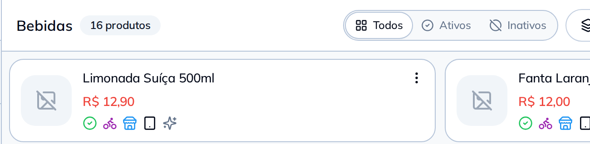

Cadastra uma Limonada Suíça 500ml
por R$ 12,90 em Bebidas
Pronto: Limonada Suíça 500ml criada em Bebidas, a R$ 12,90.

Diga o produto, o preço e o setor. Quando você abrir o Cardápio, ele já está lá, no setor certo.
Cadastra uma Limonada Suíça 500ml
por R$ 12,90 em Bebidas
Pronto: Limonada Suíça 500ml criada em Bebidas, a R$ 12,90.
